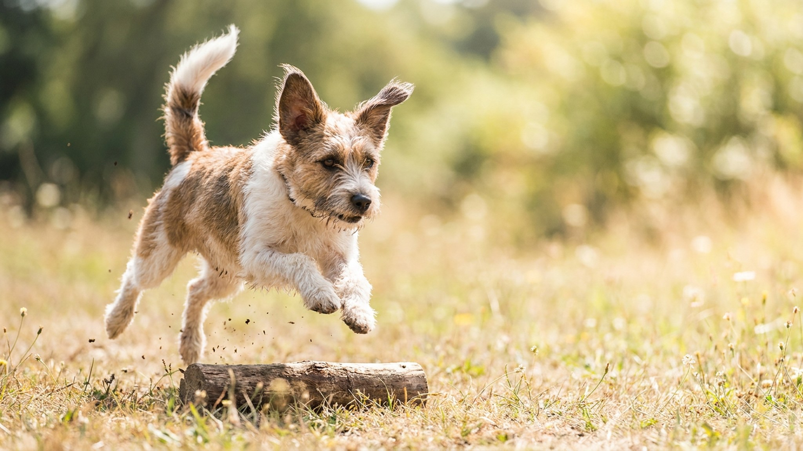

Билеты куплены, чемодан собран — и тут всплывает вопрос, который откладывали до последнего: а с кем останется кот или собака? От того, что вы выберете, зависит, вернётесь ли вы к спокойному питомцу или к стрессу, испорченной мебели и чувству вины. Ниже — три рабочих варианта, чек-лист как проверить человека или передержку и что подготовить заранее, чтобы отъезд прошёл гладко.
🐾 Питомец ведёт себя странно?
AnimaLife расшифрует поведение кошки и собаки и подскажет, что делать. Попробуйте бесплатно прямо в мессенджере.
Универсального ответа нет — выбор зависит от вида питомца и его характера:
Для кошки почти всегда мягче остаться дома с няней: кошки привязаны к территории сильнее, чем к людям. Собаке чаще важнее компания и внимание, чем стены.
Не соглашайтесь по одной переписке. Что стоит сделать заранее:
Стресс от разлуки снижают привычные вещи и предсказуемость. За пару недель до отъезда: если это передержка — свозите туда на «пробную» короткую ночёвку. Соберите с собой лежанку или плед с домашним запахом, любимые игрушки, запас привычного корма на все дни (резкая смена рациона — лишний стресс для пищеварения).
Проверьте, что документы и прививки в порядке, а на питомце или в его данных есть актуальный чип и адресник — на случай, если животное окажется в незнакомом месте. Многие передержки без ветпаспорта с отметками просто не примут.
Составьте короткую памятку для того, кто остаётся с питомцем: чем и сколько раз кормить, режим прогулок или чистки лотка, привычки и страхи (боится грозы, прячется от гостей), что можно и что нельзя. Отдельно — контакты вашего ветеринара и особенности здоровья: если питомец получает назначенные врачом средства, оставьте их с понятной инструкцией от ветеринара, а не «на глаз».
И оставьте способ связи с собой. Одно короткое видео с питомцем в день — и ваш отпуск, и его «отпуск» пройдут гораздо спокойнее.
🐾 Здоровье питомца под контролем
AI-ветеринар, дневник здоровья и персональные советы для вашего питомца — установите AnimaLife бесплатно.
🐾 Понравился разбор?
Подпишитесь на канал — каждый день разбираем по одному тревожному симптому у кошек и собак: что в пределах нормы, а когда пора к врачу. Подпишитесь, чтобы не пропустить разбор, который может спасти здоровье вашего питомца.
Материал носит информационный характер и не заменяет очную консультацию ветеринара.